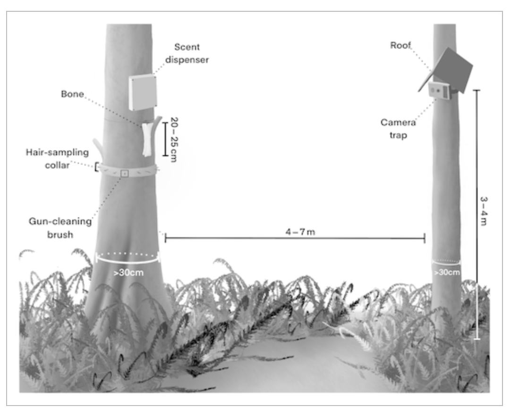

About
I am a Senior Conservation Scientist in the Field Conservation Department at Woodland Park Zoo, where I direct the Living Northwest Program and the Northwest Carnivore Recovery Program. I am also an Affiliate Assistant Professor in the School of Environmental and Forest Sciences at the University of Washington.
My research focuses on the ecology and conservation of mammalian carnivores in the Pacific Northwest and beyond, with particular emphasis on noninvasive survey methods, occupancy modeling, and applied conservation of species such as wolverine, fisher, marten, lynx, and gray wolf. I was lead editor of Noninvasive Survey Methods for Carnivores (Island Press, 2008), a comprehensive reference for the field.
Before joining Woodland Park Zoo in 2013, I was a Research Ecologist with the Western Transportation Institute at Montana State University, and a postdoctoral researcher with the Adirondack Nature Conservancy. I earned my Ph.D. in Natural Resources from the University of Vermont in 2006.
Graduate Students Advised
PhD
- Samantha Kreling — Ph.D., 2021–2025. School of Environmental and Forest Sciences, University of Washington.
- Robbie Emmet — Ph.D., 2017–2021. School of Environmental and Forest Sciences, University of Washington.
M.S.
- Dylan Hubl — M.S., 2022–2024. School of Environmental and Forest Sciences, University of Washington.
- Michael Havrda — M.S., 2015–2022. School of Environmental and Forest Sciences, University of Washington.
- Joseph Smith — M.S., 2009–2010. Department of Ecology, Montana State University.
Selected Invited Talks
This section is in progress. The current CV does not include an invited talks list — content will be added here as it becomes available.
Selected Publications
This list is a selected subset and may not be up to date. For a full list please see my CV or Google Scholar.
* denotes equal contribution ^ denotes equal advising


When the wild things are: Defining mammalian diel activity and plasticity
Science Advances, February 2025

SNAPSHOT USA 2019–2023: The first five years of data from a coordinated camera trap survey of the United States
Global Ecology and Biogeography, January 2025

An overwinter protocol for detecting wolverines and other carnivores at camera traps paired with automated scent dispensers
Ecology and Evolution, 14: e11290, 2024

Climate, food and humans predict communities of mammals in the United States
Diversity and Distributions, June 2024

Environmental contamination predicts mammal diversity and mesocarnivore activity in the Seattle-Tacoma metro area
Urban Ecosystems, 28: 152, 2025

City divided: Unveiling family ties and genetic structuring of coyotes in Seattle
Molecular Ecology, e17427, 2024

Genetic connectivity of wolverines in western North America
Scientific Reports, 14: 28248, 2024

Mammal responses to global changes in human activity vary by trophic group and landscape
Nature Ecology & Evolution, 2024

Wolverines (Gulo gulo) in a changing landscape and warming climate: A decadal synthesis of global conservation ecology research
Global Ecology and Conservation, 34: e02019, 2022

Modeling multi-scale occupancy for monitoring rare and highly mobile species
Ecosphere, 12: e03637, 2021

Projects
Wolverine Monitoring with Automated Scent Dispensers